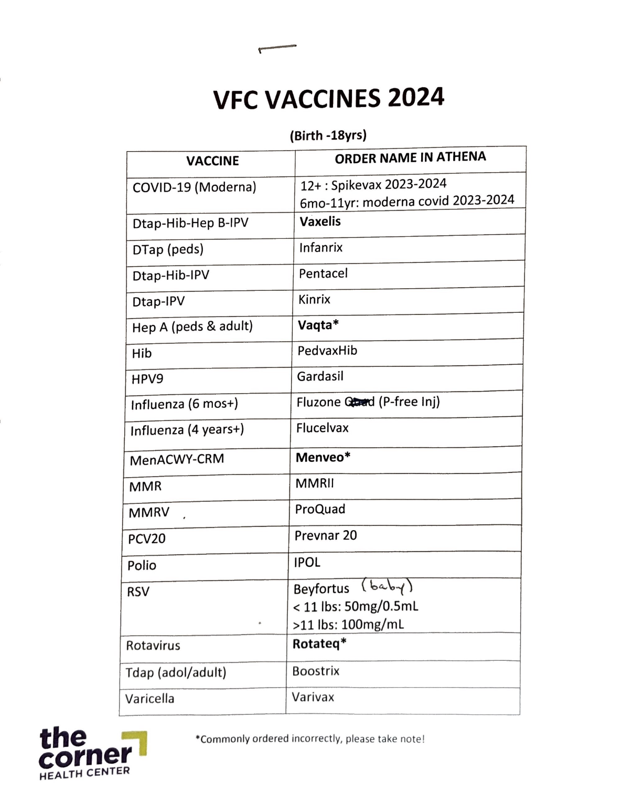
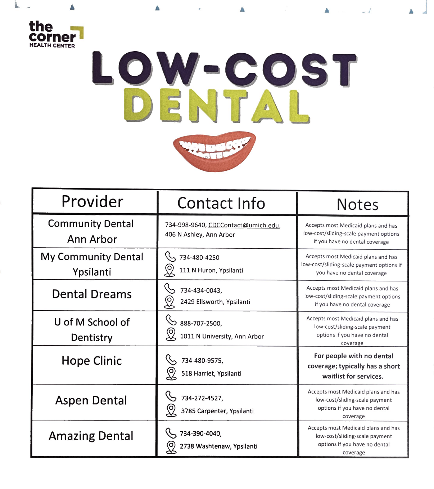

Well child visits are labeled in Athena as WCC. These are fairly structured visits, and you will often reach for the same few resources for these visits.
In Athena, there are templated review of systems categories for the major well-visit ages. These include diet and nutrition, sleep, elimination, development and safety. These can be used as a guide for your conversation with the caregiver.
To access these templates, navigate to the ROS tab > click on the plus sign to the right of the Review of Systems label at the top of the page > search for templates by typing in "WC" into the search bar > several templates should populate > choose the appropriate age > select the appropriate responses and add text when relevant

There is formula available in both the store and clinic area for interested patients. A good time to bring this up is when you are discussing feeding during the ROS.
Social Work can also help refer patients to WIC for access to formula and other resources for infants.
Incorrect nipple size on bottles are also a common cause of feeding problems in infants. You can test the nipple that the family has during the visit. If a new nipple is needed, there may be some available in the clinic. Checking in with the person responsible for restocking the store (Jazmyn as of Jan 2026), is a good starting point. The MAs may also be aware of what is available.
Solid Starts - app and website resource to help introduce solid foods. It provides guidance on what types of food to introduce and how to prepare them.
At each well child visit, the caregiver(s) that accompany the child are asked to fill out the Ages and Stages Questionnaire (ASQ) to assess the appropriate milestones. The results of the scored ASQ should be recorded in the chart on the physical exam tab.
In patients that demonstrate a concern for developmental delays, a referral to Early-On should be placed. This is done through an internal referral to nursing.
The vaccine schedule is posted in the workroom along with the order names in athena that correspond to each vaccine.
Fluoride supplementation is recommended at 6 months and 9 months. Fluoride treatment packets are available in the workroom. The patient and caregiver are able to brush the fluoride on themselves.
There is also a resource in the team room that lists affordable dental care in the area.
Look on the shelves above the desks in the workroom to find books arranged by targeted age that can be given to children at well child visits. There are also used books available on the top shelf for siblings, so no one feels left out.